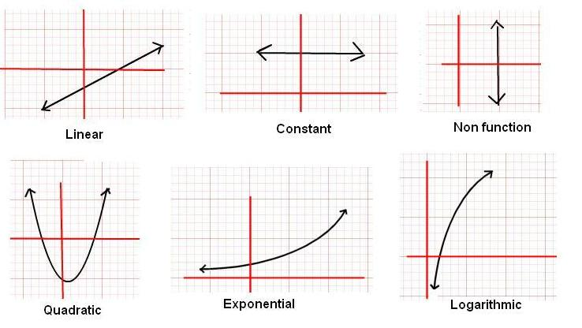
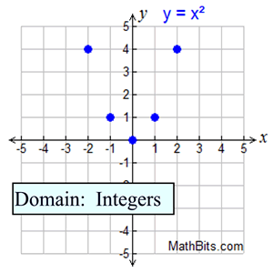
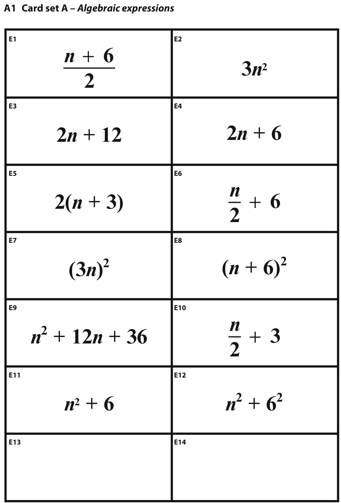

Mathematics
Mathematics (from Greek μάθημα máthēma, “knowledge, study, learning” ) is the study of topics such as quantity (numbers), structure, space, and change.There is a range of views among mathematicians and philosophers as to the exact scope and definition of mathematics.
Introduction to Functions.

A function is a rule which operates on one number to give another number. However, not every rule describes a valid function. This unit explains how to see whether a given rule describes a valid function, and introduces some of the mathematical terms associated with functions.
- Identify a function as a special type of relation.
- Recognize functions in various representations and use function notation.Try!
- Explore the properties of some basic functions and apply transformations to those functions.
- learn more
Discrete Functions: Financial Applications

A set of data is said to be continuous if the values belonging to the set can take on ANY value within a finite or infinite interval.
- Determine how interest is earned and charged.learn more
- Use the different between future value and present value to solve problems.
- Solve problems about money invested at regular intervals over a period problems.Watch the video to learn more
- Calcluate payments that must be made when a purchase is financed over a period of time.
Equivalent Algebraic Expressions.

Two algebraic expressions are said to be equivalent if their values obtained by substituting the values of the variables are same.
- Determine whether algebraic expressions are equivalent.learn more
- Add, subtract, multiply, and factor polynomials.
- Simplify rational expressions.Watch a video to learn more
- Add, subtract, multiply, and rational expressions.
go top